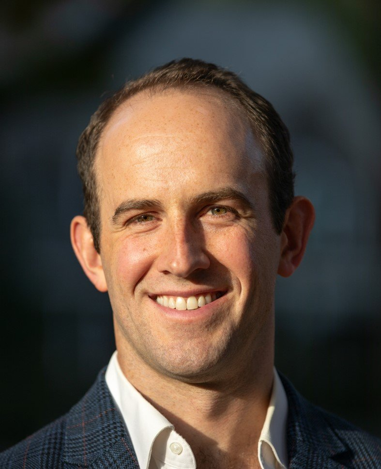

Dedicated to architectural and interior design and to the preservation of the natural world.
Auerbach Architecture is a collaborative practice serving residential, museum, and commercial clients across Martha's Vineyard, Cambridge, New York City, the Hamptons, Vermont, and Maine. We believe architecture should honor its site, serve its inhabitants, and tread lightly on the land.

Zander Auerbach
AIA, RA — Partner & ArchitectZander brings 15 years of experience in residential design, construction management, and advanced building systems. His work is guided by a commitment to nature-integrated modern architecture and a deep respect for the landscape.
Prior to founding the firm, Zander worked at Maryann Thompson Architects and the MIT Media Lab, where he managed large-scale R&D and construction projects with budgets ranging from $2M to $115M.
- Harvard University
- University of Massachusetts at Amherst
- Previously: Maryann Thompson Architects; MIT Media Lab
- Registered Architect (RA), AIA Member
Emily Ottinger
AIA, LEED® GA, RA — Partner & ArchitectEmily is a registered architect licensed in Maine, Massachusetts, and New York with 17 years of professional experience. Her practice spans academic, commercial, residential, museum, and life sciences buildings.
An accomplished painter, Emily brings a fine arts sensibility to every project. She has worked at Peter Eisenman Architects in New York, Nasrine Seraji in Paris, and Ann Beha Architects in Boston.
- Yale University — Master of Architecture
- Wellesley College — BA in Architecture
- Previously: Peter Eisenman (NYC); Nasrine Seraji (Paris); Ann Beha Architects (Boston)
- Licensed in ME, MA, NY — AIA Member, LEED® GA